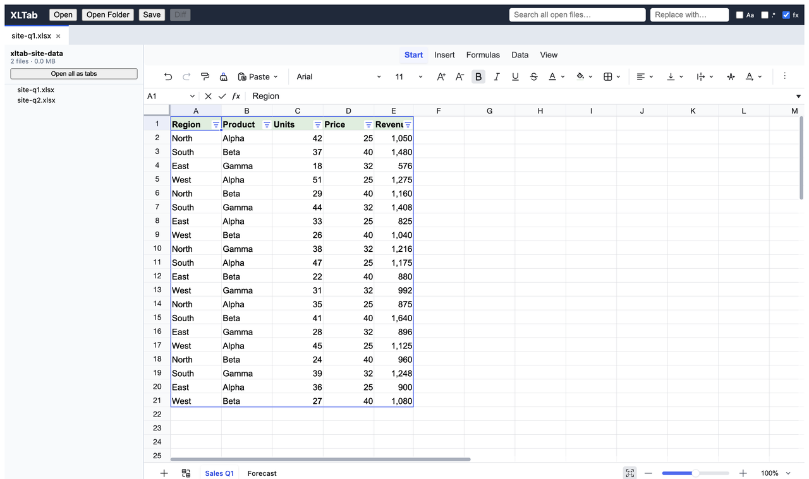
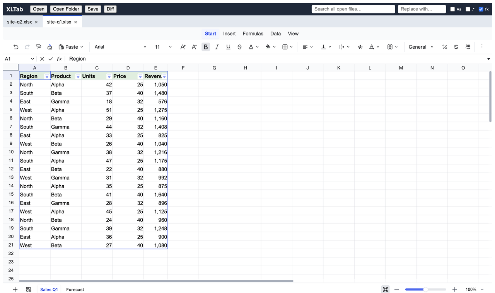

Features
Excel for editing. Beyond Excel for everything else.
Every capability below is in the shipping app — no roadmap promises.
The headline
Search every open workbook at once
Type in the search box and XLTab searches values — and optionally formula text — across every open workbook and every sheet, live as you type. Results group by file and sheet. Every matched cell gets a highlight overlay, correct per sheet. Click a result and you jump straight there: right tab, right sheet, right cell, scrolled into view.

Impossible in Excel
Diff two workbooks cell-by-cell
Pick any two open tabs and XLTab compares them: sheets matched by name, cells classified as added, removed, or changed — values and formulas both. Color-coded like a code diff, with counts per sheet. Perfect for "what changed between the version I sent and the one that came back?"

Workspace thinking
Open a folder, get a workspace
Point XLTab at a folder and it scans recursively for spreadsheets — preserving your directory structure in a sidebar tree, skipping Excel lock files and non-spreadsheets. Files load lazily when clicked, or open them all as tabs at once. Combined with global search, you can search an entire project folder's worth of spreadsheets in one keystroke.

The essentials, done right
Filter, sort, validate — like you expect
Column filter dropdowns work the way you know from Excel, and files that already have autofilters open with them active — and keep them when saved. Sorting, conditional formatting, data validation dropdowns, freeze panes, merged cells, number formats and styles all included.

Real formulas
Formulas that compute — and survive
A live formula engine recalculates as you edit: SUM, VLOOKUP, XLOOKUP, SUMIFS, INDEX/MATCH, IF chains, cross-sheet references — hundreds of functions. Formulas are stored as standard Excel formulas, so a file you edit in XLTab recalculates identically when opened in Excel.

Honest limits
What XLTab doesn't do
Pivot tables, charts, macros/VBA, Power Query, printing, and legacy binary .xls files. If your workbooks are data + formulas + formatting, XLTab is home. If they run on pivots and macros, use it alongside Excel — as the layer that searches and compares across everything.
Free. Offline. Two minutes to install.